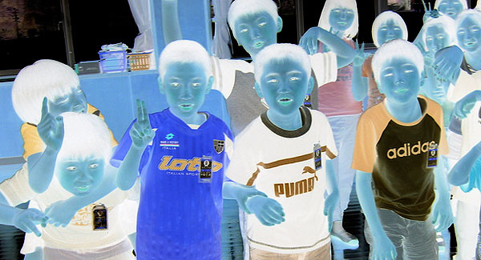

Learning Kanji The Way Japanese Kids Learn Kanji (Is A Terrible Idea)
“If at first you do succeed, try something harder.” – Ann Landers

Almost every teacher, student, textbook, and resource has you learn kanji the same way as Japanese school children. At first glance, this seems like the most common sense thing to do. If you take the time to look at it more closely, though, you’ll see that it doesn’t make any sense at all.
There are two main parts to learning kanji. First, there’s how the kanji looks. Each kanji is basically its own picture/image/logograph. Each kanji looks different. The second part of this equation is the meaning of each kanji. Since every kanji looks a little bit different, each kanji can have its own meaning associated with it. When learning kanji, you need these two parts whether you’re a Japanese school kid or a 75 year old gorilla trainer.
When it comes to Japanese school children, though, they have to learn kanji by learning the kanji with the simplest meanings first. This actually makes sense (for them, not you), because they’re little kids and they need to learn vocabulary words (and they can’t do that if the meaning is too difficult). It’s like this in English, too. You probably knew the word “to drink” before you knew the word “to chug” (that is, unless you grew up in a frat house). One meaning is just more complicated than the other meaning, even though the word “chug” has fewer letters in it.
This means that with Japanese school children, the most important thing that they take into account is the complexity of the meaning of the kanji, and not so much the kanji itself. This concept is probably easiest to get across visually.
乙 了 丈 勺
Take a look at the kanji above. None of them have more than three strokes to them. Despite this, these kanji are considered “advanced,” so Japanese school kids would learn these much, much later. The reason is because the meanings of these kanji are more difficult.
Now, take a look at this next set of kanji. Notice how much more complicated they look?
曜 線 鳴 算
Despite how many strokes they contain, and despite how difficult it would be for a beginner like you to have to learn something like this, these kanji are considered to be pretty beginner (in regular circles, at least). You would learn these kanji approximately four years before you learned the first set of “advanced” kanji I wrote above.
Now, don’t worry if you can’t read any of these, that’s not the point. The point is… most people have you learn kanji in a way that would teach you the bottom set of kanji before the top set of kanji, and to me that’s just ridiculous.
Here’s the thing. If you’re learning Japanese as a second language, you probably have a pretty good handle on English (or some other language) already. That means the meaning of the kanji isn’t the problem. You understand concepts and words that little kids don’t, so meaning of the kanji shouldn’t be taken into account when deciding order. Instead, the complexity of the kanji itself should be what you base your order of learning on.
So, that right there is the problem, and that’s also one of the reasons why TextFugu does kanji so differently. Now, that’s not the only thing we’ll be doing to make kanji a lot more pleasant, continue reading to learn what else you’ll be doing in order to become a kanji learning master.
Takeaway Just because Japanese school children all learn kanji one way, it doesn’t mean it’s right for you (someone who’s not a Japanese school kid). TextFugu will be teaching you kanji in order of simple → complex (the kanji itself, not the meaning), where each kanji builds on the last in a way that makes learning a new kanji very easy. Instead of spending 6-7 years learning the “suggested” 2000ish kanji, you’ll spend less than a year and spend a lot less time with each kanji. It’s all about the method, not the memorization.
When you’re ready to learn more, head on over to the next page.